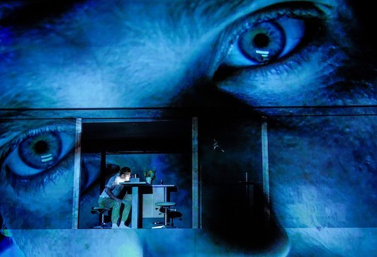
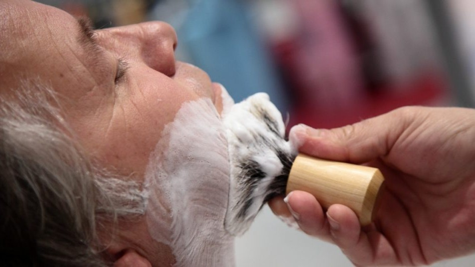

- Kids
-


Der arme Soldat Woyzeck lebt ein einfaches Leben. Er hat mit Machtspielchen, Geldproblemen und Ausnutzung zu kämpfen. Seine Berufung ist es für Marie und deren uneheliches Kind zu sorgen - ob sie das wohl erkennen kann? Denn er verliert immer mehr seine Vernunft und sie ihre Treue.

Woyzeck jongliert sein Leben als Soldat und Vater, während er sich vom Hauptmann alles gefallen lassen muss (Sz. 14, 5, 4).

Woyzeck jongliert sein Leben als Soldat und Vater, während er sich vom Hauptmann alles gefallen lassen muss.
Szenen: 14, 5, 4Woyzeck streitet sich mit dem Doktor, der sich daran erfreut, dass seine Versuche Früchte tragen. Sein bester Freund versucht Woyzeck so gut er kann zu helfen.
Szenen: 8, 1Während die Menge im Tanz versinkt, verliert Woyzeck den Halt - und bereitet sich auf die Verteidigung seiner inneren Welt vor.
Szenen: 12, 16Woyzeck vollendet sein Lebenswerk, doch er fängt schnell an dieses zu bereuen. Woher kamen seine Anwandlungen?
Szenen: 13, 20, 24, 25